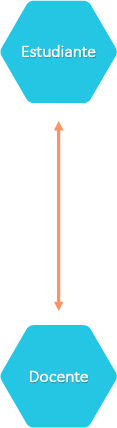
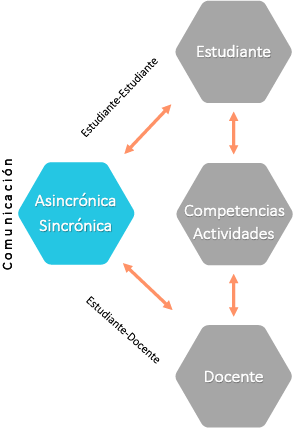
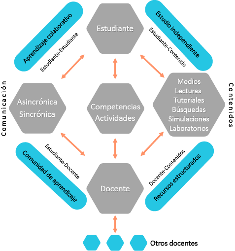

Reconocemos que el proceso de enseñanza y aprendizaje se sostiene gracias a la comunicación que se establece entre docentes y estudiantes.
Tradicionalmente, esta comunicación y acompañamiento se lleva a cabo de forma presencial. Así están diseñados la mayoría de nuestros entornos educacionales.
No obstante, también es posible recrear los procesos de enseñanza aprendizaje en entornos remotos.
A continuación, analicemos algunos de sus elementos y cómo se complementan para promover el aprendizaje.
Lo esencial
Partimos por lo esencial, la relación entre estudiantes y docentes.
Como docentes asumimos la gran responsabilidad y privilegio que conlleva formar e influenciar la formación de otros.
Como estudiantes, ávidos de nuevos conocimientos y habilidades, podemos valora la guía indispensable que puede proveer el(la) docente.

La intención
La relación entre docente y estudiante está mediada por un fin específico, el promover la adquisición de nuevas capacidades o competencias.
Las mismas se habrán de cultivar a través de actividades guiadas que permitirán oportunidades de práctica y retroalimentación.

Las barreras de tiempo y espacio
El desafío y oportunidad que tenemos en la enseñanza remota o a distancia es cómo sostener esta relación y colaboración entre docentes y estudiantes cuando existe una barrera de tiempo y espacio.

La comunicación
Para superar las barreras de tiempo y espacio, primero establecemos canales de comunicación.
Al igual que sostenemos relaciones personales y profesionales mediante los medios a nuestro alcance (teléfono, correo, video llamada, etc.), creamos un vínculo comunicacional entre docentes y estudiantes.
La comunicación puede ser sincrónica (al mismo tiempo), como en una llamada telefónica. O bien, puede ser asincrónica (a destiempo), como el envío de una carta.
Las herramientas elegidas facilitarán la comunicación entre el(la) docente y sus estudiantes, así como entre los propios estudiantes.
Un aula virtual, como la que usa en este momento, facilita el uso de mensajes individuales y foros compartidos.

El conocimiento
¿Y cómo accede el(la) estudiante a los materiales, conocimientos y recursos que ha elegido el(la) docente para facilitar el aprendizaje?
Esto se logra mediante posiblemente materiales digitales que puede incluir recursos tales como:
- Lecturas
- Presentaciones del(la) docente con su voz e imagen.
- Vínculos a recursos remotos, desde museos hasta documentales.
- Plantillas de trabajo
- Rúbricas de evaluación
- Multimedios
Podemos usar recursos no digitales caso sea posible que los participantes tengan acceso a libros, y otras publicaciones impresas.

El entorno de enseñanza
Visto como un conjunto, un entono de enseñanza remota en un aula virtual permite:
Recursos estructurados e intencionalmente compartidos por el(la) docente.
El estudio independiente que realiza el estudiante al interactuar con los recurso de contenido.
El aprendizaje colaborativo que se puede fomentar al estimular y estructurar las comunicaciones entre estudiantes.
Y, en consecuencia, la comunidad de aprendizaje que puede llegar a fomentar el docente en su entorno remoto, producto de su planificación y presencia en el aula virtual.
Finalmente, al igual que en el aula presencial, su colaboración con otros docentes también habrá de enriquecer su quehacer e impacto.

Modelo adaptado de Anderson, Terry (2011). Toward a theory of online learning. Recuperado de:
https://ustpaul.ca/upload-files/DistanceEducation/TOWARDS_A_THEORY_OF_ONLINE_LEARNING.pdf